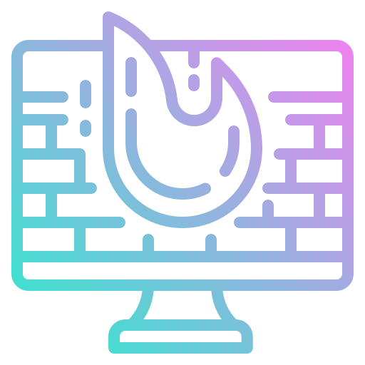

Dr. Juke
О программе
remove
web_asset
close

Компьютер защищен
Сканирование файловой системы
Облачное сканирование
Карантин
Список исключений
Настройка компонентов защиты
Защита файлов и объектов реестра